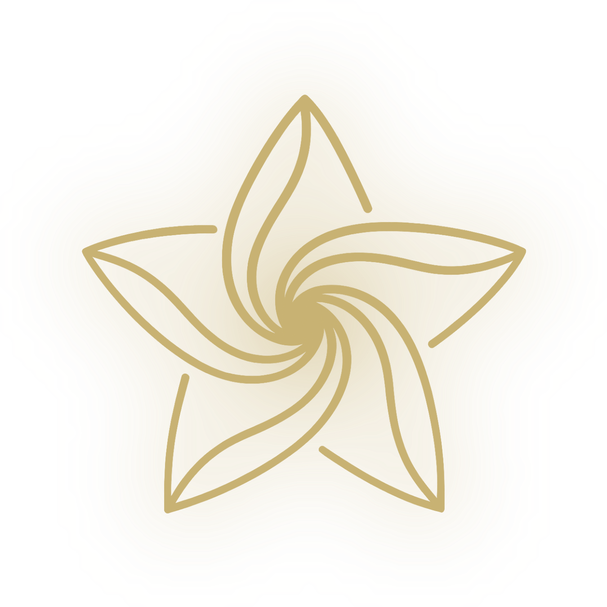

Este grito no es traición, ni es rebeldía deliberada. No es que los discípulos tengan malas intenciones o que rechacen a Jesús. Es el resultado directo y predecible de una mentalidad que procesa la tormenta como abandono. Cuando tu filtro interpreta el peligro como una prueba de que el Padre se ha ausentado, la reacción inevitable, la más humana y comprensible, es el reclamo: ¿no te importa que nos hundamos? Cualquiera que haya estado en una tormenta real, de las que quitan el sueño y agotan el alma, ha sentido ese mismo impulso.
Lo que salió de la boca de los discípulos fue la expresión directa del filtro que operaba bajo la superficie, procesando la crisis con una lógica transaccional: si el Padre está aquí y hay tormenta, o no sabe lo que pasa, o no le importa, o no puede hacer nada. Ese «algo falló» se convierte en reclamo, revelando un marco mental que ve la obediencia como un contrato y la dificultad como deuda impagada. Una mente no renovada toma la promesa más clara del Padre y la procesa a través del miedo hasta volverla irreconocible.
Esa pregunta final de Jesús no es una condena, sino una invitación a observar el propio marco mental en acción. Estar en medio de una tormenta y reclamar no es señal de que eres incrédulo, sino evidencia de que tu nous todavía está procesando la realidad desde el miedo y desde la lógica de la transacción. Ese es exactamente el punto de partida de la renovación mental — no el final del camino. Jesús no abandona a quien reclama en la tormenta.
Selecciona un elemento del panel izquierdo para verlo aquí.